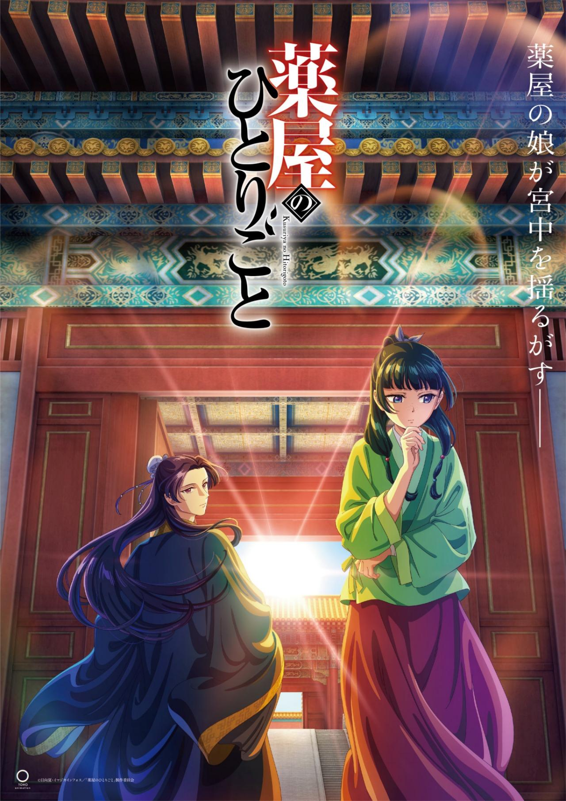

Kusuriya no Hitorigoto, también conocida bajo su nombre en español Los
diarios de la boticaria.
Maomao es una joven sirvienta que se ve obligada a trabajar en el harén
de la corte imperial, pues la secuestran y la venden al palacio
interior. Ya desde sus orígenes como boticaria en el distrito rojo de la
ciudad, su naturaleza curiosa y su sed de conocimiento la han empujado a
actuar. Y cuando los rumores sobre la muerte de uno de los hijos del
Emperador llegan a sus oídos, la joven boticaria tomará cartas en el
asunto.

DEATH NOTE
Death Note cuenta la historia de Light Yagami, un estudiante excepcional
de secundaria que encuentra un misterioso cuaderno de notas el cual
pertenece a un dios de la muerte también llamado shinigami que responde
al nombre de Ryuk. El poder de este sobrenatural bloc de notas permite
terminar con la vida de los demás.
ELFEN LIED
La historia de Elfen Lied presenta una especie ficticia, los diclonius,
como una mutación humana con dos pequeños cuernos parecidos a las orejas
de un felino. Poseen poderes telequinéticos gracias a sus receptores
vectoriales; estos vectores, como se les suele denominar, se asemejan a
largos brazos invisibles capaces de vibrar a una frecuencia tal que
llegan a cortar materiales muy duros como el metal o la piedra. También
disponen de una percepción extrasensorial que les permite sentir la
presencia de otros sujetos de su raza.